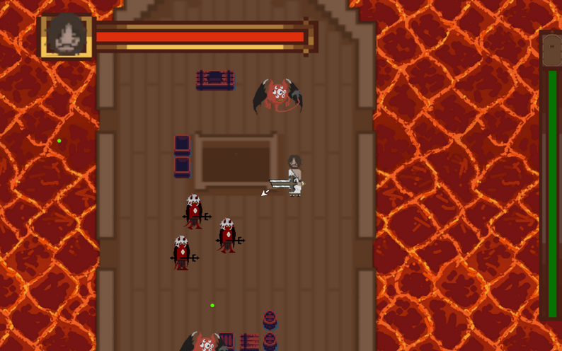
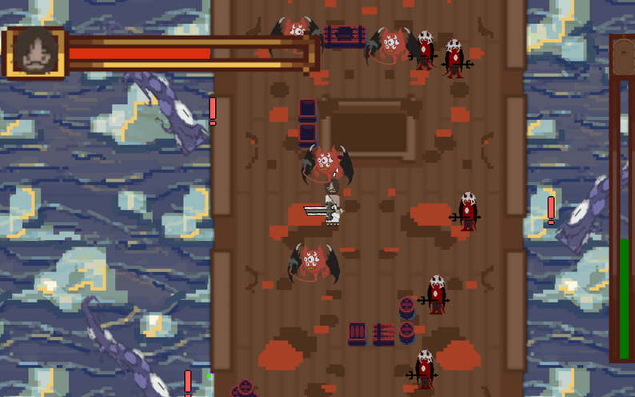
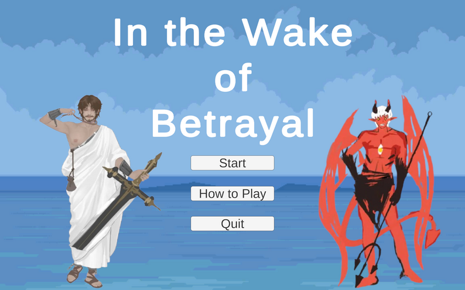
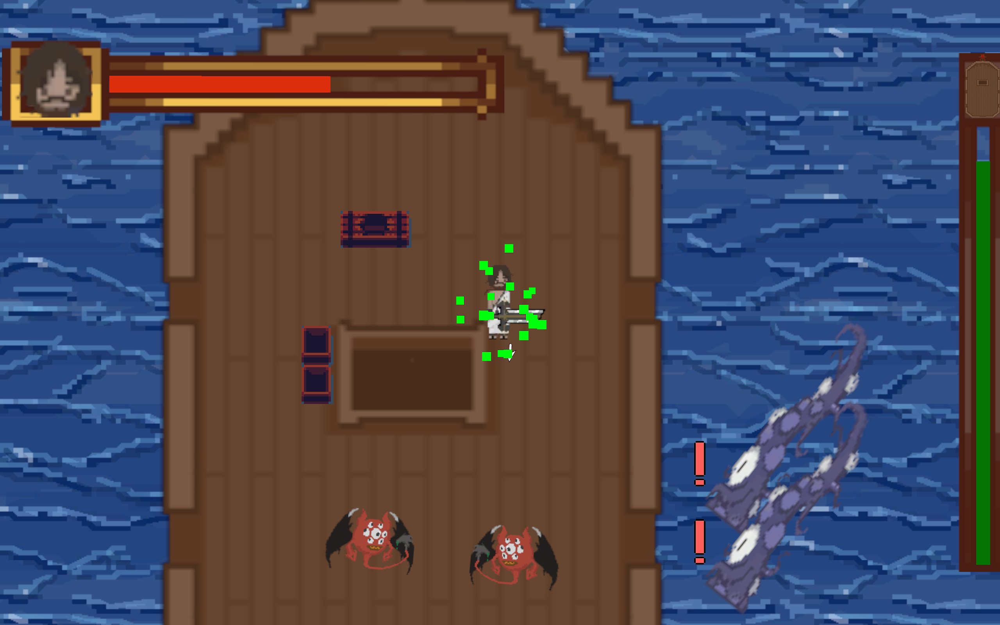

In the Wake of Betrayal
Play as Judas, who has been given a chance at redemption after the betrayal that damned his soul to hell. He has been sent on a ship that will guide him to Heaven, but redemption does not come free, and the servants of hell will attempt to stop him as he makes his escape. Defend yourself and your ship by dodging, parrying, and slashing your way through hordes of enemies.
Play GamePlatform: Windows
Engine: Unity
Development Duration: May - July 2025
Project Role: Engineer
In the Wake of Betrayal is a Biblical action game that mixes fast-paced directional combat with wave defense gameplay. As you progress through the stages of Hell, Earth, and Heaven, you must fight off waves of enemy demons who are trying to kill you and destroy your ship. Combat puts an emphasis on timing with a parrying mechanic that can stun enemies and deflect projectiles, as well as a directional dodge which goes through enemy attacks.
Gallery

Notable Contributions
- Basic player movement and dodging
- Player combat mechanics (attacking parrying)
- Ranged enemy and tentacle enemy AI design
- Ship health system
- Enemy wave spawning system
Post-Mortem
As one of our team's two engineers, my work was mostly focused on gameplay programming and implementing some of the game's core systems, whereas much of the work of AI programming went to the team's other programmer. Compared to my previous Unity project, this game was much more fast-paced and action heavy, and as such much of my time was spent iterating on and refining our combat mechanics in order to try and get them feeling as smooth and satisfying as possible.
Though the game was developed over the course of six weeks, we were able to maintain a very manageable scope for the project by focusing on the core gameplay loop early on and keeping levels fairly simple, which allowed the game's replayability to come from the combat and the wave randomization rather than through large amounts of content. The game's fast-paced melee combat was one of the game's greatest strengths, as it helped make even early versions of the game feel exciting and difficult. The game's 2D nature also helped simplify certain aspects of development, such as player and enemy movement, aiming, and level creation, which allowed us to spend more time experimenting with our systems and figuring out new parts of Unity (such as navmeshes and the animation system) rather than dealing with transformation-based bugs.
Despite this simplicity, we did end up running into problems with script dependencies. Many of our independent scripts ended up being very explicitly coupled with each other in order to work properly, which led to the bloating of script sizes and unnecessary complication. This also ended up causing problems later on with the debugging process, as there were certain bugs that could seemingly be tied to several different systems and required lots of work isolating compared to if those systems had less explicit dependencies. Additionally, while we were able to refine our core gameplay loop early on, there were many quality of life and "game feel" portions of the game that were neglected until later in development, such as sound and menus. This lead to some of those features being somewhat rushed and incomplete, which impacted our overall game feel.
Moving forward, I would steer clear of this project's strict script coupling and create systems that can operate more independently, which will produce cleaner and more maintainable code. I will also work to create more sophisticated systems for aspects like sound and VFX early on so as to allow those areas to be more well-defined. Aside from those problems, I will also remember the successes we had with our game's combat to create engaging gameplay and player input on future projects.